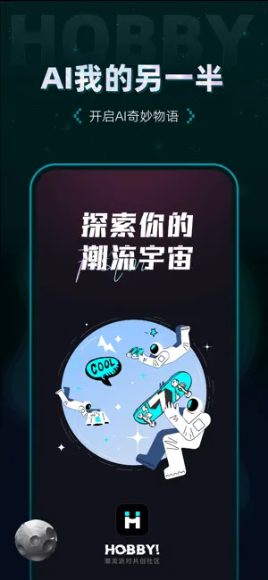

AI 角色扮演 App 横评：Hobby 为什么在养崽和探剧两条线上同时出彩
用过好几款 AI 角色扮演应用之后，Hobby 是我少数愿意长期留着的一款。它在养成积累和剧情探索两条玩法线上都做出了差异化，本文从老用户视角聊清楚它的定位、取舍和适合人群。
先说位置：这个类目里 Hobby 排在哪
AI 角色扮演这两年几乎成了移动端的一个小赛道。打开应用商店搜关键词，同类工具能翻出好几屏——从大厂做的通用助手套上角色壳，到独立团队专攻对话体验的垂直产品，再到把角色扮演和二创社区绑在一起的平台型应用。每一家的出发点和侧重点都不一样，同质化背后其实藏着不同的产品哲学。
如果只看"让你和 AI 角色聊天"这一个核心场景，选谁都差不离。但如果你希望的不只是聊几句，而是真的跟一个角色长期互动、看着它有变化、或者想在一段预设好的剧情线里做选择——那 Hobby官网 就得另看了。它在玩法深度上走出了两条别人没有同时做透的线：融合养崽和二创探剧。这两个不是主功能之下的小彩蛋，而是从产品设计初期就并行的两条主线。下面分别说。
差异化一：融合养崽，把"性格"做成可积累的东西
大多数同类产品里，AI 角色是什么样，从你第一次打开它的那一刻就已经定好了。它的人设、说话风格、甚至口头禅，全是创作者预设的参数。你跟它聊三个月，它还是那个样子——顶多记住一些聊天历史来维持上下文连贯，但性格本身没有成长。
Hobby 的融合养崽系统不一样。它的核心思路是：角色的性格、特质、偏好，是可以通过互动积累出来的。你跟它聊天、给它送礼、甚至让它跟其他角色融合，这些操作都会在系统里留下痕迹，最终沉淀成这个角色独有的性格参数。养崽的"养"字不是形容词，是真的在养——你花进去的时间和星光币，不只是换几句 AI 回复，而是在塑造一个越来越立体、越来越跟你熟悉的角色。
这带来一个很实在的变化：你跟 Hobby 角色的对话，每一次都不是从零开始。AI 能记得你们之前的互动历史这只是基础，更重要的是角色本身在"长大"——它的语气会因为你的相处方式变得更温柔或者更俏皮，它可能会记住你提过的某个爱好然后主动聊起。这种"有反馈的长期互动"，是同类里很少见的。

差异化二：二创探剧，把聊天变成有分支的剧情体验
和养崽的"长期积累"互补的，是二创探剧的"短期体验"。探剧在产品里的定位说得很清楚：这不是一对一聊天，而是在一个预设好的剧集世界观里做角色扮演。系统给你一个起点、一个场景、几个关键角色，然后在剧情的关键节点让你选 A 还是选 B——不同选择通向不同的分支走向，甚至不同的结局。
这个设计聪明在哪里？它把 AI 对话的最大不确定性，变成了体验的一部分。纯聊天时你最怕的就是 AI 突然跳戏或者忘了之前的设定，但探剧场景下，剧情的骨架是预设的，AI 只需要在给定的分支里把对话撑起来——它的自由度刚好卡在能让你觉得"我真的在演这段"，但又不会跑飞。
更有意思的是 Hobby 给探剧准备的世界观来源：有热门剧集 IP、有原创短剧世界观、还有用户共创的剧情线。也就是说，你不仅是体验别人给你写好的故事，还能在社区里找到同好们一起搭建的世界观进去玩。这种社区驱动的内容供给，让探剧的内容池不会因为官方更新慢就枯竭。
取舍：好产品没有免费的午餐
说到这里可能觉得 Hobby 简直完美了，但它有几个明确的取舍——我不会假装这些问题不存在，因为它们直接决定了什么样的人适合用它。
上手门槛比同类高
同类应用大多是"打开 → 选角色 → 直接聊"，三步进入核心体验。Hobby 要做的事更多：养崽得先翻 Hobby文档 理解融合系统的规则、探剧得先选世界观再进场景、好感等级和语音通话的解锁路径也需要你先搞清楚。对只想随便聊两句的人来说，这套机制确实有点重。它把大量的产品复杂度藏在了"深度体验"的背后。
星光币体系是真实的
从官方下载装好应用、注册后就能看到 Hobby 的虚拟货币叫星光币，获取方式是应用内购。新用户有赠送的免费体验次数，免费聊天也基本够用，但一旦你想加速好感等级、解锁语音通话（语音消耗算力更大所以被做成了深度互动奖励），充值就是绕不开的。从价格档位来看，从 ¥1 到 ¥518 覆盖了从偶尔体验到重度消费的跨度，但这毕竟是一笔真金白银。对比那些纯免费或者靠广告变现的同类产品，这是 Hobby 在商业模式上的直接选择——不搞广告弹窗，靠深度用户付费。
平台限制以官方为准
iOS 和安卓客户端的功能细节、内购档位可能有出入，停机维护时段语音不可用这类边界情况也存在。这些不是 Hobby 独有的问题，但它在文档里不回避这一点，以实际版本为准的口径反而让用户预期更清晰。
选购结论：什么样的人选它
说了这么多，最后给一个直接的购买决策参考：
选 Hobby，如果你：
- 不满足于 AI 角色一成不变，希望跟它的互动能积累出东西
- 喜欢有选择、有分支的剧情体验，而不是纯对话
- 愿意为深度体验付费，能接受应用内购的模式
- 想同时兼顾长期养崽和短期探剧两种玩法
考虑别的，如果你：
- 只想打开聊两句，不想花时间理解复杂系统
- 完全不接受任何形式的应用内购
- 对养成或剧情探索都没兴趣，就是想找个通用 AI 助手
对我个人来说，Hobby 最打动我的地方不是它功能多，而是它做每一件事都在想"用户为什么要这么做"。融合养崽不是为了加一个数字，而是为了让角色和你的关系有真实的积累感；语音通话不是默认功能，而是为了让它成为深度互动之后的奖励。这种设计思维，在同类产品里真的少见。
最后
关于 Hobby 的完整资料和整理好的文档，我分别传到了 GitHub、Gitee 和 GitCode 三个仓库，喜欢哪个平台就去哪个看。